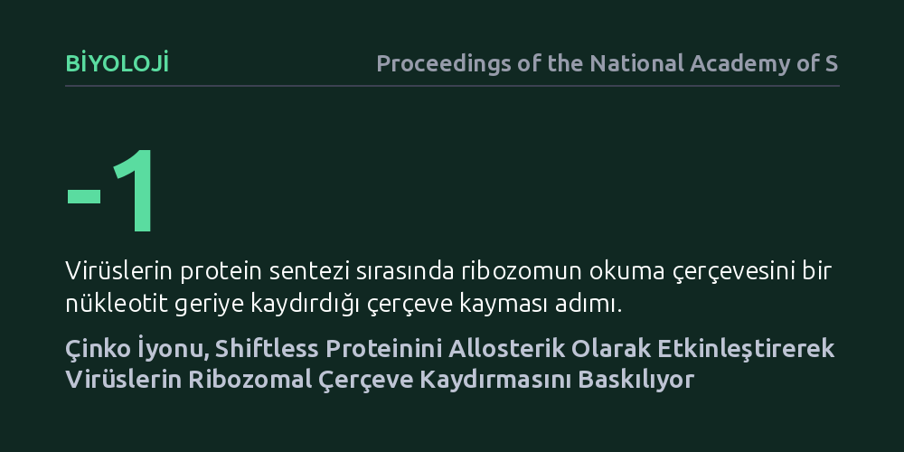

BIYOLOJI · Proceedings of the National Academy of Sciences · 2026-10-15
Araştırmacılar, bağışıklık sistemine ait Shiftless proteininin HIV-1 ve SARS-CoV-2 gibi virüslerin çoğalmasını nasıl durdurduğunu inceledi. Çalışma, çinko iyonlarının bu proteine bağlanarak onu allosterik biçimde etkinleştirdiğini ve virüslerin ribozomal çerçeve kaydırma mekanizmasını baskıladığını ortaya koydu.
Hücrenin virüsleri durdurmak için kullandığı doğal savunma proteininin çinko ile nasıl harekete geçtiğini aydınlatıp HIV-1 ve koronavirüslere karşı geniş spektrumlu yeni antiviral tedavilerin geliştirilmesine moleküler bir hedef sunuyor.

Virüsler kendi başlarına çoğalamayan, girdikleri konak hücrenin biyolojik mekanizmalarını kullanarak varlığını sürdüren yapılardır. HIV-1 ve SARS-CoV-2 gibi tehlikeli patojenler, hücre içinde çoğalabilmek için genetik kodun okunması sırasında hassas bir zamanlama ve denge kurmak zorundadır. Bu virüsler, yapısal proteinleri ile çoğalma enzimlerini tek bir genetik şeritten doğru oranlarda üretebilmek için "programlanmış -1 ribozomal çerçeve kayması" adı verilen bir mekanizmaya güvenir. Protein üretim tezgahı olan ribozom, virüsün şifresini okurken belirli bir noktada bir harf geriye kayar; bu küçük kayma tamamen farklı ve virüsün çoğalması için vazgeçilmez olan enzimlerin sentezlenmesini sağlar.
İşte tam bu aşamada konak hücre eli kolu bağlı beklemez. Bağışıklık sistemimiz, istilayı fark ettiğinde "Shiftless" adı verilen özel bir savunma proteinini devreye sokarak virüsün bu çerçeve kaydırma hilesini engellemeye çalışır. Ancak bilim insanları uzun süredir bu proteinin ribozomdaki çerçeve kaymasını tam olarak hangi moleküler mekanizmayla durdurduğunu ve hücre içinde nasıl faal hale geldiğini tam olarak aydınlatamamıştı. Bu mekanizmanın çözülmesi, tek bir virüs yerine aynı okuma hilesini kullanan onlarca farklı virüse karşı ortak bir savunma stratejisi geliştirme potansiyeli taşıdığı için biyoloji dünyasında kritik bir soru işaretiydi.
Araştırmacılar, Shiftless proteininin çalışma prensibini aydınlatmak için laboratuvar ortamında ayrıntılı biyokimyasal ve moleküler deneyler tasarladı. Deneylerde, virüslerin çerçeve kaydırma bölgelerini içeren RNA dizilimleri ile hücrenin protein üretim mekanizmaları bir araya getirildi. Ekip, Shiftless proteininin yapısını, ribozoma tutunma biçimini ve ortamdaki farklı kimyasal etkenlerin bu etkileşimi nasıl yönlendirdiğini adım adım inceledi.
Bu incelemelerde araştırmacılar özellikle metal iyonlarının protein yapısı üzerindeki etkilerine odaklandı. Çinko iyonunun varlığında ve yokluğunda Shiftless proteininin üç boyutlu yapısındaki değişimler biyokimyasal bağlanma testleriyle haritalandırıldı. Ayrıca protein üzerindeki kritik amino asit bölgeleri genetik mühendisliğiyle tek tek değiştirilerek, hangi yapı taşlarının çerçeve kaymasını engellemede belirleyici olduğu kontrollü deneylerle sınandı.
Elde edilen bulgular, Shiftless proteininin tek başına doğrudan işlev görmediğini, etkinleşmek için çinko iyonlarına ihtiyaç duyduğunu gösterdi. Çinko iyonu, Shiftless proteininin özel bir bölgesine bağlandığında proteinde "allosterik aktivasyon" olarak adlandırılan yapısal bir dönüşüm tetikleniyor. Başka bir deyişle çinko, proteinin şeklini değiştirerek onu pasif bir durumdan hedefi kilitleyen aktif bir savunma aracına dönüştürüyor.
Aktif hale gelen Shiftless proteini, ribozom tam çerçeve kayması yapacağı noktada durakladığında devreye giriyor. Protein, ribozomun kayma hareketini fiziksel ve biyokimyasal olarak engelleyerek hatalı veya fazladan viral proteinlerin üretilmesinin önüne geçiyor. Araştırmacılar, çinko bağlama bölgesinde mutasyon oluşturulmuş Shiftless proteinlerinin ribozomal çerçeve kaymasını baskılayamadığını doğrulayarak çinkonun bu savunma hattı için vazgeçilmez bir moleküler anahtar olduğunu ortaya koydu.
Bu çalışma, konak hücrenin virüslerle savaşırken kullandığı doğal bir moleküler fren sisteminin iç mekanizmasını netleştiriyor. HIV-1, koronavirüsler ve benzeri pek çok virüsün çoğalmak için aynı -1 ribozomal çerçeve kaydırmasına bağımlı olması, bu fren sistemini hedefleyen geniş spektrumlu antiviral ilaçlar tasarlamak için somut bir zemin sunuyor. Gelecekte geliştirilecek moleküller, Shiftless proteininin bu aktif yapısını taklit edebilir ya da hücrenin kendi savunma mekanizmasını daha verimli kullanmasını sağlayabilir.
Yine de bu bulguları bir mucize tedavi olarak yorumlamamak gerekir; çalışma bir ilaç denemesi değil, temel bir mekanizma aydınlatmasıdır. Hücre içi çinko dengesi vücutta son derece sıkı yönetilen karmaşık bir sistem olduğundan, dışarıdan çinko takviyesi almanın doğrudan bu proteini çalıştırıp virüsleri yok edeceği düşünülmemelidir. Araştırmanın laboratuvar ortamında elde edilen moleküler sonuçlarının canlı organizmalarda ve klinik modellerde nasıl karşılık bulacağı, yanıtlanması gereken sonraki adımı oluşturuyor.